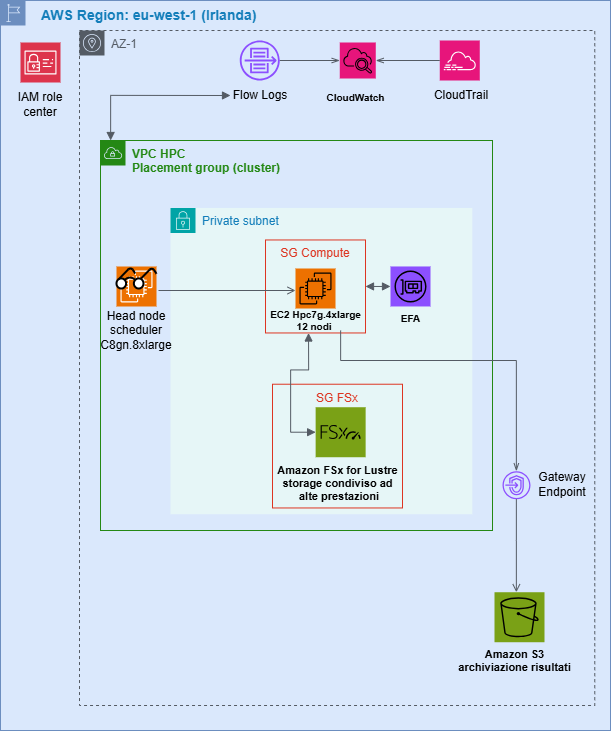
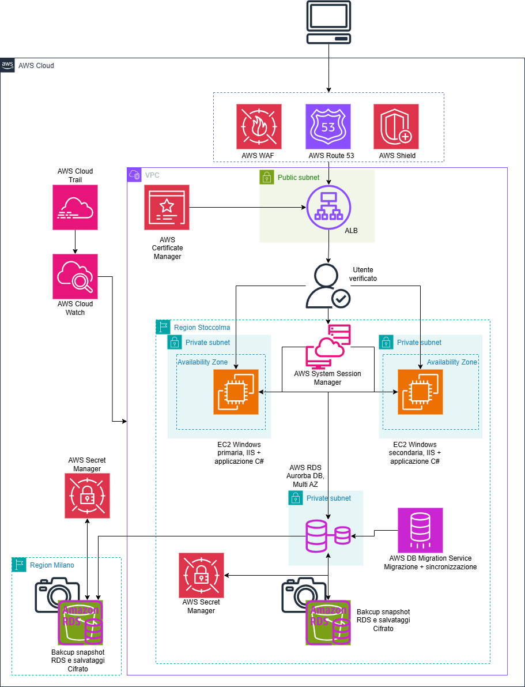
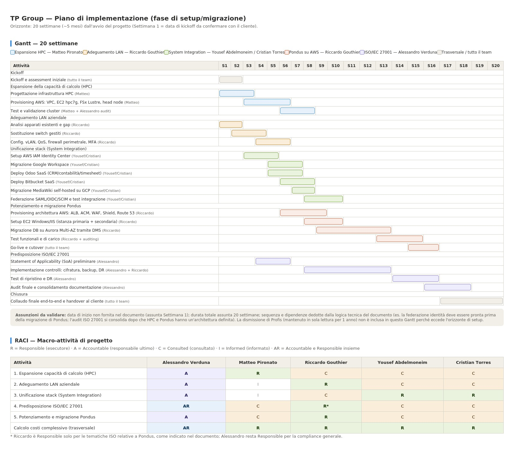

500.500 $ / 440.000 €
Cluster HPC (Savings Plans)
Proposta di progetto — MOSAIC GROUP
Dalla fusione tra Thema Consulting e Pro Studio nasce TP Group. Tre interventi — cluster HPC, unificazione degli strumenti, potenziamento di Pondus — ricostruiscono l'infrastruttura su AWS in vista di ISO/IEC 27001.
Due aziende attive nella progettazione automotive e aerospace si alleano per rispondere a un mercato sempre più orientato a soluzioni tecnologiche avanzate. Dalla loro unione nasce TP Group. La fase di integrazione coinvolge pesantemente tutti i sistemi informativi, oggetto di questo progetto. Con la fusione, il contratto di locazione di Pro Studio non viene rinnovato: i dipendenti si trasferiscono presso la sede di Thema Consulting.
Fondata a fine anni '90 da tre ingegneri progettisti con un decennio di esperienza in progettazione meccanica. Focus: progettazione strutturale automotive.
Startup nata nel 2023, composta da giovani ingegneri progettisti attivi in ambito aerospace.
Il budget indicato dal cliente confronta l'acquisto di nodi di calcolo proprietari con una soluzione a noleggio cloud, a conferma della direzione presa dalla proposta tecnica.
Il gruppo è composto da cinque membri afferenti al corso ACA (AWS Cloud Architect). Il lavoro è suddiviso per garantire efficienza, qualità e controllo incrociato su tutte le attività.
Thema Consulting opera oggi con un unico data center on-premise, "piccolo, efficiente, ma poco capiente": i due armadi rack sono saturi e non consentono alcuna espansione fisica, pur restando funzionali per l'attività ordinaria. La proposta prevede un cluster HPC autonomo su AWS, affiancato al data center locale senza sostituirlo, con head node e scheduler dedicati. Regione: eu-west-1 (Irlanda), per vicinanza geografica, bassa latenza e disponibilità delle istanze HPC più recenti.

Schema HPC — architettura del cluster su AWS
Dodici nodi EC2 hpc7g.4xlarge (16 vCPU, 128 GB RAM ciascuno), connettività a 200 Gbps con Elastic Fabric Adapter (EFA) equivalente a Infiniband, in placement group dedicato su subnet privata. Storage di scratch su FSx for Lustre (0,075 TB/CPU, sopra il minimo richiesto di 0,066 TB/CPU). Head node basato su Slurm, sempre attivo, che accende i nodi di calcolo solo in presenza di job. Monitoraggio via CloudWatch/CloudTrail, accessi tramite ruoli IAM a privilegio minimo, risultati archiviati su S3.
| Componente | Configurazione | Totale 3 anni ($) | Totale 3 anni (€) |
|---|---|---|---|
| EC2 hpc7g.4xlarge | 12 istanze, Savings Plans, ~11.000 $/mese, Irlanda | 400.000 | — |
| FSx for Lustre | Scratch, 1,2 TB/nodo, 2.220 $/mese per 12 nodi | 80.000 | — |
| Head node / scheduler | c8gn.8xlarge, upfront 3 anni, sempre acceso | 20.500 | — |
| TOTALE HPC (vs. 576.000 $ a on-demand) | 500.500 | 440.000 | |
Punto di pareggio fra Savings Plans e on-demand: ~70% di utilizzo del cluster. Sotto tale soglia conviene l'on-demand, sopra conviene l'impegno triennale.
La fornitura hardware riguarda esclusivamente l'infrastruttura di rete locale: server, storage e calcolo sono interamente demandati ai servizi cloud (Google Workspace, Odoo SaaS, Bitbucket SaaS, MediaWiki su GCP, AWS IAM Identity Center). L'adeguamento della LAN comprende:
Posta, produttività, videoconferenza, archiviazione file, CRM, contabilità, time sheet, controllo versione, documentazione e autenticazione sono oggi duplicati fra Thema Consulting e Pro Studio, con soluzioni eterogenee e ridondate. La proposta converge dieci ambiti di servizio su un unico stack, con AWS IAM Identity Center come broker di identità centrale (SAML 2.0, OpenID Connect, SCIM, MFA obbligatoria).
Il software legacy Profis resta in sola lettura su un'istanza EC2 per un anno (compliance finanziaria), poi dismesso.
Governance AWS: AWS Organizations con OU dedicate — OU-HPC, OU-Pondus, OU-Shared-Services, OU-Security — protette da Service Control Policies, con tagging obbligatorio per tracciabilità granulare dei costi per servizio, OU e team.
| Voce | Dettaglio | Costo annuo (€) |
|---|---|---|
| Google Workspace | Standard, 50 dipendenti | 8.160 |
| Odoo | Standard, 10 dipendenti | 1.428 |
| Bitbucket | Standard, 40 dipendenti | 1.920 |
| MediaWiki | Free, hosting su GCP | — |
| IAM Identity Center | Free | — |
| Profis (compliance) | Attivo 1 anno, una tantum | — |
| Backup (locale + S3) | Cifrato e ridondato | 100 |
| TOTALE ANNUO / 3 ANNI | 11.600 / 35.000 | |
La strategia di backup e Disaster Recovery si applica a Pondus, unico servizio esposto all'esterno:
Il cluster HPC è escluso dalla strategia di backup avanzata: uso interno, dati di scratch non persistenti, nessun requisito di compliance o continuità operativa. Solo i risultati dei job, già su S3, sono persistenti.
Pondus viene ricostruita integralmente su AWS con architettura ridondata e scalabile. Accesso utenti tramite Application Load Balancer con terminazione HTTPS (AWS Certificate Manager, rinnovo automatico), affiancato da Route 53 (DNS, routing, failover), AWS WAF (protezione da SQL injection, XSS, bot) e AWS Shield (mitigazione DDoS).

Schema Pondus — architettura applicativa su AWS
Livello applicativo: istanza EC2 m6i.4xlarge (16 vCPU, 64 GB RAM), con una seconda istanza identica in altra Availability Zone attivabile per alta disponibilità. Livello dati: Amazon Aurora (MySQL/PostgreSQL) Multi-AZ, istanza primaria db.r5.2xlarge, storage gp3 da 1,2 TB, backup 2 TB. Migrazione dati via AWS DMS, credenziali su AWS Secrets Manager, accesso amministrativo via Systems Manager Session Manager (niente chiavi SSH). Osservabilità con CloudWatch e CloudTrail, backup replicati cross-region.
| Componente | Configurazione | Totale 3 anni ($) | Totale 3 anni (€) |
|---|---|---|---|
| EC2 m6i.4xlarge | 16 vCPU, 64 GB RAM, 2 istanze, upfront, Stoccolma | 17.000 | 15.000 |
| RDS Aurora DB | db.r5.2xlarge, 8 vCPU, 64 GB RAM, storage gp3 1,2 TB, backup 2 TB, Stoccolma | 75.000 | 66.000 |
| TOTALE PONDUS | 92.000 | 81.000 | |
556.000 €equivalenti a 631.500 $ — impegno triennale (modello EC2 Savings Plan)
Nel modello on-demand, System Integration e Pondus restano stabili; solo l'HPC varia in base all'utilizzo previsto del cluster: sotto il 70% conviene l'on-demand, sopra conviene l'EC2 Savings Plan.
link a Github Pages del diagramma di Gantt e RACI Table: https://riccardogouthier-all.github.io/MOSAIC_GROUP/nicetohave/

Gantt di progetto e RACI Table — pianificazione temporale e responsabilità per attività